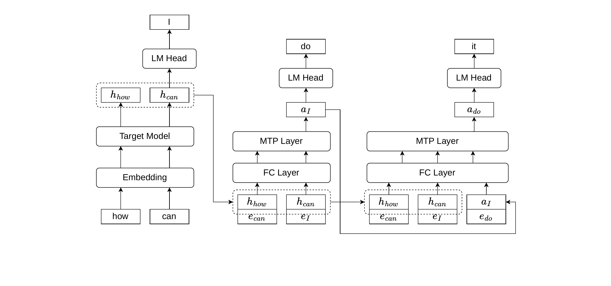
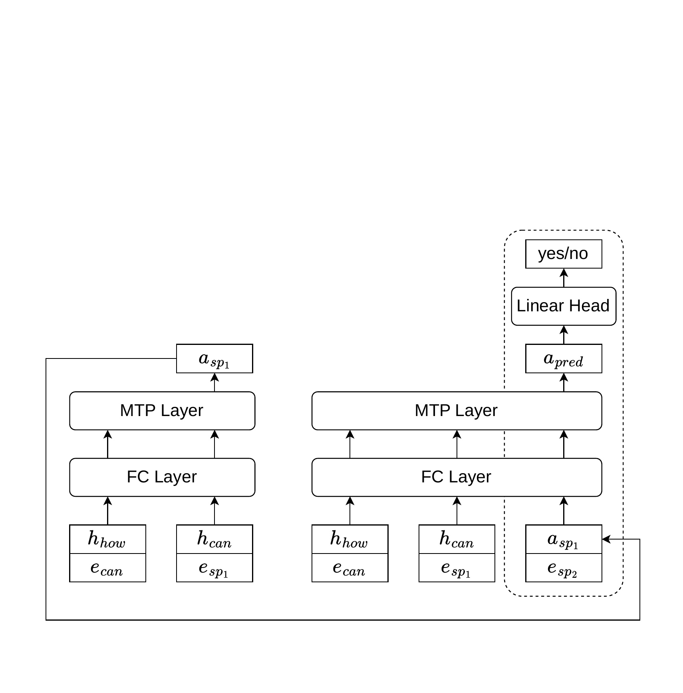
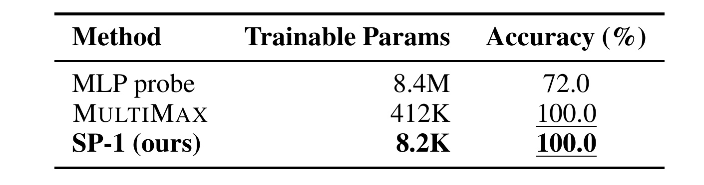
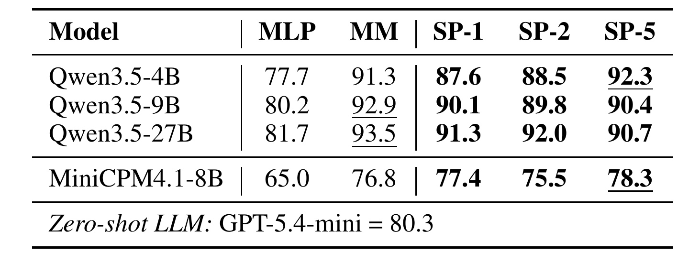
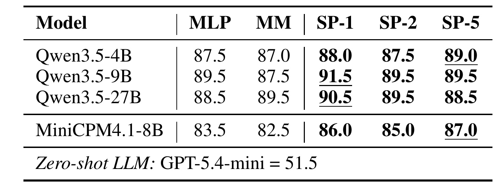
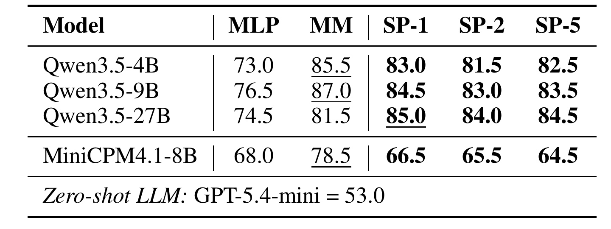
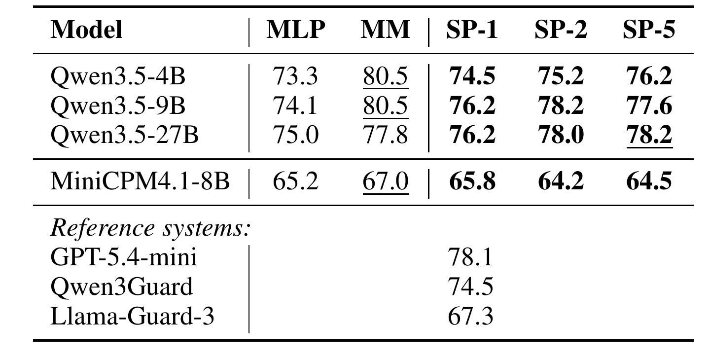
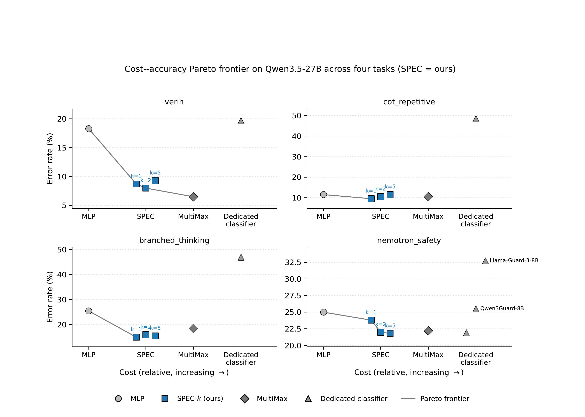
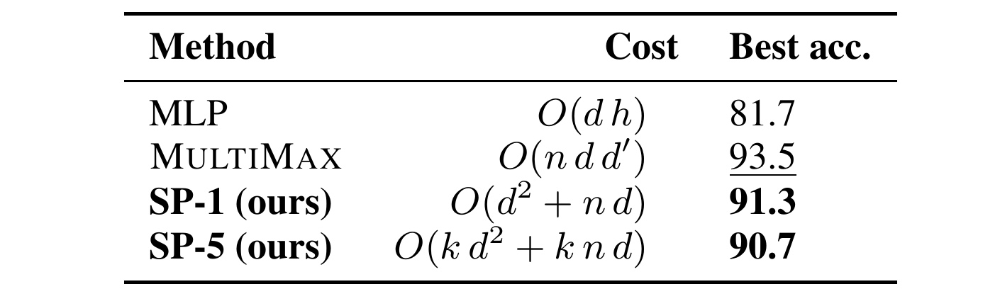
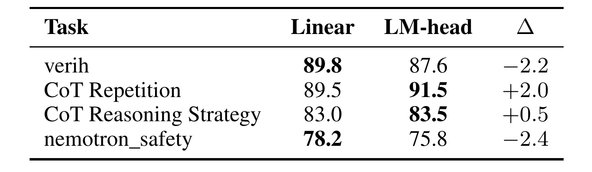

Speculative Probing：以投机解码成本完成大模型监控
Speculative Probing 研究如何在大模型生成过程中低成本地做实时二分类。论文作者为 Collin Zhang、Tingwei Zhang 和 Vitaly Shmatikov，均来自 Cornell Tech。论文于 2026 年 8 月 28 日公开，可从 arXiv:2608.28099 进入。作者的 SpeculativeProbing 项目仓库 已核验，包含 Qwen MTP 与 MiniCPM Eagle3 两条探针路径的代码。
实时分类必须在生成中或生成后立即完成，但仅读取末位隐状态的轻量探针难以捕捉跨位置依赖和结构模式；独立安全分类器或逐 token 汇聚又会显著增加推理开销。
[toc]
1. 背景和问题
大模型上线后往往不只输出文本，还需要同时判断输入是否越狱、输出是否包含不安全内容、长推理是否陷入无意义循环，以及 Agent 获得的长文档中是否混入隐私信息或与系统指令矛盾的内容。这些任务的共同难点是时间窗口很窄：监控结果如果不能在生成当下或结束后立即得到，就无法及时拦截、停止或将异常样本送入后续分析。因此，监控器的准确率和增量延迟是一对同时受线上系统约束的目标。
已有方案大致占据这条光谱的两端。一端是在冻结主模型的隐状态上训练线性层或小型 MLP。这类方法读取最后一个 token、少数位置，或简单池化后的一个向量，成本很低，但相当于要求一个压缩后的末位表示承载整个序列的所有任务信息。如果标签取决于某个被埋在 2048 token 文档中的 PII 片段，或取决于推理轨迹中是否出现多分支结构，这种强压缩就可能丢失关键局部证据。论文把这个缺口称为缺少跨位置交互与序列级表达能力。
这并不意味着末位隐状态一定无效。自回归模型的末位本来就通过因果注意力看过前文，如果任务信号很容易被压缩成“当前是否正常”的全局特征，MLP 完全可能很强。论文后面的 CoT Repetition 就是例子：多个模型的末位 MLP 已接近 90%。真正要检验的是任务条件：标签是否依赖一个稀疏局部片段、多个远距离位置的相互作用，或整条思维链的树状结构。Speculative Probing 的目标不是否定末位探针，而是在这些受限任务上为端到端贵模型之间增加一个新操作点。
另一端是独立运行 Llama-Guard、Qwen3Guard 或 LLM-as-a-judge，它们能重新读取全部文本，表达力更强，却要再做一次完整模型前向。MULTIMAX 位于两者之间：它对每个 token 的中层表示做两层 MLP 投影，再用多个独立头对位置取最大值，可以保住局部强信号，但其逐位置投影成本仍与序列长度和 MLP 宽度相乘。换言之，光是把一个分类头做小，并不代表它能同时处理长程依赖和线上延迟。
因此，“成本”需要至少拆成四层。首先是任务参数，它决定每新增一类监控需保存多少权重；其次是每条请求的新增 FLOPs；第三是内存与数据搬运，包括能否直接读取现有 KV cache；最后是真实服务延迟，它还受 batch、kernel 并行、显存带宽和监控时机影响。一个只训练数万参数的方法，如果要为整个长文档重新计算中间层，仍可能不符合线上预算。论文的独特性正是将“权重少”和“运行时已有缓存”同时绑定在一个设计中。
Speculative Probing 的切入点是：新一代模型为了加速解码，本来就可能带有 MTP 或 Eagle3 这类轻量投机头。MTP 头用主模型隐状态和 token 嵌入预测未来 token，投机解码时它的前缀 KV cache 已存在 GPU 中。作者问的不是“能否再训练一个小模型做监控”，而是“能否把已为加速付费的内部模块转化为序列分类器”。这一问法将新增成本从“再读整段文本”改成“用少量查询继续读已缓存的前缀”。
这个设计还暗含了一个与普通软提示不同的角色分工：软提示不负责把原始文本“理解一遍”，它更像是针对已由主模型编码的前缀提出任务查询。所以，一个 Qwen3.5-27B 上的小探针实际读取的是 27B 模型已产生的表示，而独立 8B guard 必须从 token 开始自己构建表示。这可以解释少量可训练参数为何仍可获得不错的准确率，但也意味着探针会继承主模型和投机头的偏差、语言覆盖与表示盲区。
围绕这一思路，论文实际上同时回答三个问题。第一，原本为未来 token 预测训练的投机头中，是否保留了足够的序列分类信息？第二，如果它只有一层 Transformer，是否能通过递归的任务软提示增加读取容量？第三，这种表达力是否真的能在已有投机解码系统中以小得足够的增量成本运行？前两个问题由 PII 控制实验、四类正式任务和 MTP/Eagle3 对比回答，第三个主要依靠 KV 复用的复杂度分析和成本序数图。这也是阅读实验时应将“表示证据”与“线上系统证据”分开的原因：前者较充分，后者还缺绝对延迟与吞吐测量。
论文选择的四个主任务刻意覆盖不同的信号形态。VerIH 需要跨越系统指令和用户指令判断矛盾；CoT Repetition 检测长思维链中的无效循环；CoT Reasoning Strategy 要区分树状探索与线性推进；Nemotron Safety 更接近常规的短 prompt 多语言安全判断。它们不是用同一种表面模式重复证明一个结论，而是检验探针在局部稀疏信号、跨段语义、全局结构和短文本语义上的得失。因此，后文各表之间的不一致本身就是重要结果，不应只挑选最佳行得出普遍胜利。
这套问题还不是无监督异常检测。每一类监控都要准备任务标签，且线性头与软提示是任务专用的；新的攻击模式、语言或行为定义出现后，仍需要重新收集数据和校准阈值。所以，它降低的主要是已知任务的线上推理负担，并没有消除安全标注、数据更新和漂移监测的运营成本。在生产系统中，它更适合作为分层防线的一环：先以低成本高频运行，再将不确定或高风险样本升级到更强的外部审查器。这种分层关系也应进入实验：除单独准确率外，还要测量它能为后级审查过滤多少流量，以及分层后的总漏检率。
这种设定对大模型安全和推理效率都很直接，对推荐系统也有明确的迁移价值。生成式召回、序列重排或对话推荐若已经使用带投机头的 LLM，同一份内部序列表示可能同时支持政策合规、重复生成、异常会话与质量分类。但这种迁移有一个先决条件：线上链路确实已启用对应投机头并保留其缓存。如果当前服务只有普通自回归解码，为监控而单独增加一个投机头，就不能称为“已支付成本的复用”。
2. 方法
2.1 MTP 与 Eagle3：可复用的投机头
MTP 的输入包含主模型最后一层隐状态 $H\in\mathbb{R}^{n\times d}$ 和向后错一位的输入嵌入 $E\in\mathbb{R}^{n\times d}$。两者分别归一化后拼接，再通过 $W_{fc}\in\mathbb{R}^{2d\times d}$ 投影回 $d$ 维，随后进入只有一层的因果 Transformer decoder。第一步可以预测紧随当前前缀的 token；为了继续预测更远的位置，MTP 把自己上一步的隐状态与新 token 嵌入再次拼接，因而形成递归的起草过程。这一过程虽然原本服务于未来 token 预测，却也提供了一个能继续对整段前缀做因果注意力计算的小型特征提取器。

Figure 1 从左到右展示“how can I do it”的起草链。主模型先产生当前位置的隐状态；中间的 MTP 读取 $h_{how}$、$h_{can}$ 与错位嵌入 $e_{can}$、$e_I$，得到下一个起草状态 $a_I$；右侧再把 $a_I$ 与 $e_{do}$ 送回相同的 FC 和 MTP 层，预测更远的“it”。箭头清楚表明，递归步不需要让大模型重新跑一遍整个前缀，而是由小投机头消化已有隐状态。这正是后续软提示能以少数新位置读取长上下文的结构前提。
Eagle3 的外形同样是单层 decoder，但它的输入是主模型低、中、高三层隐状态的融合，而且通常在主模型已冻结后用后训练数据蒸馏。论文将 Qwen3.5 的共同预训练 MTP 与 MiniCPM4.1 的后置蒸馏 Eagle3 同时纳入实验。前者与主模型共享大规模预训练数据和多 token 预测目标，后者的蒸馏预算往往小得多。不过，论文没有在同一主模型上控制训练方式，因此后文的 MTP–Eagle3 差距既可能来自投机头训练，也可能来自主模型本身。
2.2 递归软提示与二分类头
对于长度为 $n$ 的序列，方法先使用已计算的主模型隐状态，把 MTP 原来要接收的“下一个起草 token 嵌入”换成一个可学习的连续向量 $e_{sp_1}$。MTP 输出 $a_{sp_1}$ 后，可以直接分类，也可以将它与第二个软提示 $e_{sp_2}$ 继续拼接。深度为 $k$ 的探针就重复同一冻结投机头 $k$ 次，记为 SP-$k$。这里的表达力不是来自更深的新分类器，而是用少量可学习查询反复调用已具有序列建模能力的投机层。最后一步的状态 $a$ 送入线性头：
符号解释：$w\in\mathbb{R}^{d}$ 是任务特定的可训练权重，$a$ 是第 $k$ 步投机头输出，$z$ 是标量 logit，$\sigma$ 把它变为正类概率。训练时主模型、MTP/Eagle3 和原 LM head 全部冻结，只更新 $k$ 个软提示向量与 $w$；优化目标是二元交叉熵：
符号解释：$y\in\{0,1\}$ 是监控标签，$p$ 是线性头输出的正类概率。该目标不会反向改变生成模型，因而不需要为每个监控任务保存一份大模型副本。以 Qwen3.5-27B、$k=5$ 为例，可训练参数约 18K；全文报告的范围约为 16K–20K/任务。

Figure 2 将可训练路径与冻结路径分得很清楚。左半部分用 $e_{sp_1}$ 替代普通 token 嵌入，经 FC 层和 MTP 层得到 $a_{sp_1}$；右半部分再将 $a_{sp_1}$ 与 $e_{sp_2}$ 送入同一组冻结层，得到 $a_{pred}$，最后通过线性头输出 yes/no。虚线框不是新的大模型模块，而是当前查询步的输入与读出。因此，$k$ 增大时增加的是小投机层的递归次数，不是主模型层数。这也解释了为何 $k$ 是表达力与成本的主要旋钮，而不必然呈现“越大越好”的单调性。
这幅图还显示了分类读出只发生在最后递归状态，并不对每个 token 单独预测标签再池化。序列位置之间的交互已由 MTP 的因果注意力完成，线性头只需将最终任务状态映射为标签。这是它与 MULTIMAX 的根本差别：后者在每个位置上新增投影计算，前者则借用投机头已有的注意力通道对前缀发起少数查询。
2.3 在投机解码路径上复用 KV cache
方法的成本论证依赖一个具体服务状态：投机解码已经让 MTP 对 $n$ 个已确认前缀计算了 key/value，并将 $(K_{1:n},V_{1:n})$ 留在 GPU。追加 $k$ 个软提示时，注意力只需生成新查询和新位置的 key/value，而查询数从 $n$ 个前缀位置收缩为 $k$ 个任务位置：
符号解释：$Q_{n+1:n+k}$ 是 $k$ 个软提示位置的查询，$d_h$ 是单个注意力头的维度，$K'$ 和 $V'$ 将已缓存前缀与新位置拼接。softmax 返回的只是这 $k$ 个新位置对整段前缀的读取结果，不会为旧位置再生成一遍输出。其中：
符号解释：$K_{1:n}$ 是不再计算的前缀 key cache，$K_{n+1:n+k}$ 只对新软提示位置生成。分号表示沿序列维拼接，所以新 key 可以直接与原 cache 对齐，不改变前 $n$ 个位置。对 value 同理：
符号解释：$V_{1:n}$ 为已驻留 GPU 的前缀 value cache，$V_{n+1:n+k}$ 是当次分类的临时部分。读出后新 value 会随临时缓冲区一起丢弃，不进入后续生成的持久 cache，从而保证监控查询不污染解码状态。因而新增复杂度可写为：
符号解释：$n$ 是前缀长度，$k$ 是软提示递归深度，$d$ 是 MTP 隐维；第一项来自新查询对长前缀的注意力，第二项来自投机层的前馈网络。当 $n\gg k$ 且主模型前向本就要执行时，这一增量可远小于重跑完整分类模型；若 $k$ 过大或前缀很短，固定前馈项的相对占比则会上升。
监控与起草的隔离同样重要。Speculative Probing 只读取验证步之后的已提交前缀，不在尚未被主模型接受的草稿 token 上做决策。软提示位置写入临时缓冲区，分类读出后即丢弃，后续生成不会参与这些位置。多个任务可以共享同一份 MTP KV cache，但各自持有软提示和线性头。论文所说的“接近零边际开销”因此是条件性陈述：它对已经运行相同投机头的链路成立，不是对任意 LLM 服务都成立。
3. 实验结果
3.1 设置、基线与评估口径
实验覆盖 Qwen3.5-4B/9B/27B 三个共同预训练 MTP 模型和 MiniCPM4.1-8B 的 Eagle3 头。四个正式二分类任务为 VerIH 指令矛盾、CoT Repetition 重复推理、CoT Reasoning Strategy 分支/线性结构和 Nemotron Safety 多语言安全。数据均做类别平衡，使用验证集选择最佳 epoch，再报告该 epoch 的测试准确率。这样的指标易读，但无法告诉我们不同阈值下的误拒和漏检成本，对真正安全部署仍不足。
四个底座与三种 SP 深度形成 16 个模型-任务单元，这一结构可以观察规模、投机头家族和任务信号之间的交互，但 MiniCPM 只有一个规模，不能形成与 Qwen 对称的缩放曲线。
最简单的 MLP 基线仅读最后 token 最后层状态，使用两层 MLP、2048 隐维、ReLU 与 0.1 dropout，参数约 5M–8M。MULTIMAX 则先对中间层的每个 token 状态 $x_j$ 做宽度 $d'=100$ 的投影：
符号解释：$\phi$ 是两层 ReLU 网络，$y_j$ 保留位置 $j$ 的局部信号。第 $h$ 个头用向量 $v_h$ 给所有位置打分，取硬最大值：
符号解释：$s_h$ 只保留对第 $h$ 类模式最敏感的 token，不会被长文档中大量普通位置平均稀释。$H=10$ 个头的最终 logit 为：
符号解释：$H$ 是独立头数，各头可学习不同的局部触发模式；代价是 $\phi$ 要逐 token 执行。外部基线使用固定任务 prompt 的零样本 GPT-5.4-mini；安全任务另比较 Qwen3Guard-Gen-8B 和 Llama-Guard-3-8B。零样本大模型与任务特定探针的训练预算不同，因而它更像一个线上运行参照，不是严格的等预算比较。
3.2 长文本 PII 控制实验
在正式四任务之前，作者先做一个定向压力测试。负类是 LongSafety 的无 PII 长文档，正类在其中随机注入 Nemotron PII 片段，再截断到 2048 token。数据约 1100 条，其中 1000 条训练、100 条测试；三个探针均训练 10 epoch。这不是要模拟真实 PII 分布，而是刻意构造“关键短片段被大量无关 token 包围”的表达力问题。

Table 1 给出了干净的反例：拥有 8.4M 可训练参数的末位 MLP 只有 72.0% 准确率，而逐位置读取的 MULTIMAX 和 SP-1 都达到 100.0%。这说明问题不是分类头参数太少，而是单一池化状态未可靠地保留局部位置信号。SP-1 仅有 8.2K 参数，约为 MULTIMAX 412K 的五十分之一，仍获得相同的测试结果。但测试集只有 100 条且 PII 由人工注入，100% 不应被解读为真实企业隐私流量上已解决 PII 检测。
表中参数量和准确率要联合阅读。MLP 参数最多却丢了 28 个百分点，说明增大读出层不能补回已在池化时丢失的位置信号；MULTIMAX 和 SP-1 都保留了位置敏感性，故而同时饱和。不过，这个饱和也让该实验无法进一步区分 MULTIMAX 与 SP-1 的统计性能，它更适合作为机制证伪，而不是模型排名。
3.3 VerIH 指令矛盾监控
VerIH 要求判断用户指令是否与系统指令矛盾。论文使用 5000 条训练、300 条验证和 300 条测试样本。它不只是寻找局部关键词，而需要同时理解两组指令的语义关系，因而更能检验序列级交互。

Table 2 表明不同规模上没有统一的最佳 $k$。Qwen3.5-4B 的 SP-5 从 MLP 的 77.7% 提高到 92.3%，略高于 MULTIMAX 的 91.3%；但 Qwen3.5-9B 和 27B 上 MULTIMAX 分别为 92.9% 和 93.5%，高于最好 SP 的 90.4% 和 92.0%。MiniCPM4.1-8B 上 SP-5 为 78.3%，同时高于 MLP 的 65.0% 和 MULTIMAX 的 76.8%。零样本 GPT-5.4-mini 为 80.3%，低于三个 Qwen 上的位置感知探针，但高于弱的 MiniCPM MLP。这些结果支持“低成本可接近 MULTIMAX”，却不支持“递归更深始终更好”。
从行内波动看，4B 对容量更敏感，$k=5$ 比 $k=1$ 高 4.7 个百分点；9B 和 27B 的三个 SP 值反而相差不超过 1.3 个百分点。因而大底座可能已经产生足够可分的投机头表示，过多递归查询不再稳定增益。线上系统不应只根据单个底座的最佳 $k$ 固化全部模型配置。
3.4 CoT 重复探测
重复任务用约 10000 个 WebInstruct-verified 问题请 Qwen3.5-Plus 生成推理轨迹，再用 GPT-5.4 依据固定 rubric 判断是否已得到答案却不断重走相同步骤。过滤到 8192 token 以下并平衡类别后，约为 4950/200/200 的训练、验证、测试分割。这套数据能对应真实线上的“停止无效思考”，但标签仍是单一 judge 模型产生，错误会被探针学习。

Table 3 的整体准确率高于其他任务，说明“是否重复”往往已在末位状态中有较强信号。Qwen3.5-9B 的 MLP 已有 89.5%，SP-1 提高到 91.5%；27B 上 SP-1 为 90.5%，只比 MLP 高 2.0 个百分点。MiniCPM 上 SP-5 为 87.0%，高于 MLP 83.5% 和 MULTIMAX 82.5%。零样本 GPT-5.4-mini 只有 51.5%，接近平衡数据的随机水平，反映固定 prompt 下的外部小模型并不善于判断这类长轨迹结构。这里的主要价值是低成本与稳定性，不是巨大的绝对准确率提升。
四个底座的 SP 最好值分布在不同深度：4B 和 MiniCPM 由 SP-5 领先，9B 和 27B 由 SP-1 领先。这与“递归步数应由验证集选择”的实验策略一致，也说明递归不是可随意增加的免费深度。若线上更重视延迟，SP-1 在这项任务中通常是比较稳妥的起点。
3.5 CoT 推理结构与草稿头质量
分支推理与重复任务共享同一批轨迹，但标签独立：只要模型并行考虑多个候选假设或回退尝试另一路径，就标为 branched；单一逻辑链标为 linear。约 4960/200/200 的分割与上一任务接近。因为分支是全局结构属性，它比某一局部重复片段更依赖跨位置表示。

Table 4 中，Qwen3.5-4B/9B 的 MULTIMAX 以 85.5%/87.0% 领先，SP 最好值为 83.0%/84.5%；到 27B 时，SP-1 达到 85.0%，高于 MULTIMAX 的 81.5% 和 MLP 的 74.5%。最值得注意的是 MiniCPM：MULTIMAX 为 78.5%，MLP 为 68.0%，而 SP-1/2/5 只有 66.5%/65.5%/64.5%，递归更深反而继续变差。论文将此与共同预训练 MTP 的更大数据预算相联，这是合理假设，但由于底座不同，尚不是隔离了训练食谱的因果证据。
与重复任务对照更能看出结构难度：同一批轨迹上，Qwen 4B/9B 的末位 MLP 在重复检测中达到 87.5%/89.5%，在分支结构中却只有 73.0%/76.5%。这一落差符合任务直觉：“反复说同一件事”容易汇聚成末位异常，而“曾经探索多条路径”需要保留轨迹内部的组织关系。
3.6 多语言安全与跨语料迁移
Nemotron Safety 从 v3 数据集取 11000 条平衡的多语言 prompt，保留 2048 token 以下样本，分为 10000/500/500。多数样本很短，因而测的更像多语言语义安全，不是长上下文安全。数据集直接提供标签，作者没有额外使用 judge，减少了 CoT 两任务中的模型标注偏差。

Table 5 显示 Qwen3.5-9B 的 MULTIMAX 在域内达到 80.5%，高于 SP-2 的 78.2%；27B 上 SP-5 为 78.2%，略高于 MULTIMAX 77.8%，也与 GPT-5.4-mini 的 78.1% 接近。Qwen3Guard 和 Llama-Guard-3 的参照结果为 74.5% 和 67.3%，但它们是独立模型、不同训练数据的系统对比，不应用于宣称内部探针普遍替代专用 guard。更有信息量的是外域测试：Qwen3.5-9B 的探针只在 Nemotron 训练后零样本迁移到 WildGuardMix，SP-2 保持 79.0%，MULTIMAX 从 80.5% 降到 69.0%，MLP 从 74.1% 降到 69.0%。这一次小规模迁移支持 SP 可能学到更稳定的读取方式，但尚需更多语言、攻击类型和阈值指标验证。
3.7 效率-准确率边界与消融

Figure 3 把横轴画成“MLP、SP、MULTIMAX、独立分类器”的有序成本槽位，纵轴是误差率；SP-1/2/5 在同一槽位内从左到右略微增加成本。蓝色 SP 点在四个任务上都位于绘制的 Pareto 前沿；对 CoT Repetition、branched thinking 和 Nemotron Safety，它在 Qwen3.5-27B 上同时优于图中更贵的方案；VerIH 上 MULTIMAX 误差更低，但位于更高成本槽位。需要强调，横轴是序数而非毫秒或 FLOPs 的等比坐标，因此该图能表达支配关系，不能单独给出“快多少倍”的工程结论。作者汇总 16 个模型-任务单元，SP 在其中一半匹配或超过 MULTIMAX，多数其余单元落后 2–4 个百分点。

Table 6 补上了图中成本排序的理论口径。MLP 为 $O(dh)$，但最好 VerIH 准确率只有 81.7%；MULTIMAX 为 $O(ndd')$，最好 93.5%；SP-1 为 $O(d^2+nd)$，达到 91.3%；SP-5 为 $O(kd^2+knd)$，该表对应准确率 90.7%。MULTIMAX 的逐 token 投影多一个 $d'=100$ 乘因子；SP 有固定的 $d^2$ 前馈项，当上下文超过约 10K token 时，作者认为 $nd$ 项会主导。这是渐近分析，实际延迟还取决于 kernel 启动、cache 布局、batch 大小和多监控头的并发策略。论文没有报告端到端 p50/p99 延迟，因此“sub-1%”应在目标服务上重新测量。
软提示长度的消融分散在 Tables 2–5。$k\in\{1,2,5\}$ 中，SP-1 在 16 个单元里有 7 个最好，在 14 个单元中距最好值不超过 2.5 个百分点；最大差距是 Qwen3.5-4B 的 VerIH，从 SP-1 的 87.6% 到 SP-5 的 92.3%，相差 4.7 个百分点。所以 $k=1$ 是合理的低成本默认值，$k=5$ 更像针对小模型或长上下文的可调容量，而不是统一升级。

Table 7 固定 Qwen3.5-9B 和 SP-2，只替换最后读出。冻结 LM head 使用 yes/no token logit 之差，不增加参数，它在 CoT Repetition 和 CoT Reasoning Strategy 上分别比线性头高 2.0 和 0.5 个百分点；线性头在 VerIH 和 Nemotron Safety 上分别高 2.2 和 2.4 个百分点。没有一个读出在四任务上全胜。作者默认保留线性头，理由不是它绝对更准，而是它不要求类别语义恰好与词表中的 yes/no token 对齐，代价只有数 KB。这一消融也表明，性能来自“投机头隐状态+任务查询”的组合，不是某一个新的重型分类头。
复现方面，Speculative Probing 使用 AdamW，学习率从 $3\times10^{-4}$ 余弦衰减到 $10^{-4}$，权重衰减 0.01，batch size 1，对池化状态使用 0.2 dropout。VerIH 和 Nemotron Safety 训练 10 epoch，两个 CoT 任务训练 4 epoch。所有实验在两张 96GB NVIDIA RTX PRO 6000 Blackwell 上完成；$k=5$ 的 SP 训练从数分钟到数小时，MLP 与 MULTIMAX 从数秒到数分钟。这个差异提醒我们：参数少并不等于训练绝对快，长序列递归读取仍会占用 GPU 时间。
4. 总结
4.1 我的判断
Speculative Probing 最有价值的地方，是把“低成本监控”从一个更小的外部模型，改成对生成链路已有内部计算的二次利用。它的工程命题比“训练参数只有 18K”更强：如果投机头 KV cache 已驻留，监控可用少量新查询读完整前缀，同时不干扰解码。而 Table 1 的对照说明，这种序列读取能力在局部信号被长文档稀释时确实会比大型末位 MLP 更重要。
但实验也给出了足够多的反例：VerIH 的 Qwen 9B/27B 上 MULTIMAX 更准，分支推理的 MiniCPM 上 SP 甚至差于 MLP，$k=5$ 也不稳定优于 $k=1$。因此更准确的结论是：当模型已有质量良好的投机头且任务有标注数据时，递归软提示能在很小任务参数和较低增量成本下，提供有竞争力的序列级分类。它是一个有条件的 Pareto 方案，而非所有监控器的普遍替代品。
这一判断也意味着，选型时不应仅比较最高准确率。若某个长文档任务必须保留局部信号，实际候选应包括 SP、MULTIMAX 与外部 guard，再在同一流量、同一阈值和同一硬件上统一比较准确率、延迟、显存与数据维护成本。
4.2 局限与风险
- 架构依赖。 没有 MTP/Eagle3 头，或服务并未启用对应投机路径时，KV cache 复用的低成本前提不成立；后置蒸馏新头会带来额外开销。
- 对投机头质量敏感。 共同预训练 MTP 大多强于 Eagle3，但实验没有在同一底座上控制数据和训练食谱，无法拆分两种原因。
- 任务特定监督仍昂贵。 每个监控任务需要数千到上万标注样本，CoT 标签又依赖 GPT-5.4 judge，长尾异常和新攻击很可能数据不足。
- 评估维度还不够。 四个任务主要报告平衡数据准确率，没有校准、ROC/PR、低基率场景、p99 延迟和真实多任务并发结果。
- 能力边界与治理风险。 四类二分类不代表普遍监控能力；低成本实时行为分类若没有数据最小化、保存期限和审计机制，也可能滑向过度监视或审查。
4.3 工程复现与后续跟进
- 先校验成本前提。 在目标 vLLM/SGLang 类服务中确认 MTP/Eagle3 是否实际开启、KV 是否能被分类路径零拷贝复用，并测量单头与多头的 p50/p99 延迟、显存和吞吐；否则无法验证论文的主要系统价值。
- 做同底座的投机头对照。 在一个主模型上分别使用共同预训练 MTP 和后置蒸馏头，控制头容量、数据量和训练 token，才能判断探针差距到底来自训练预算、表示对齐还是底座能力。
- 把分类评估改成线上风险评估。 在低阳性率流量上比较 PR-AUC、校准误差、固定漏检率的误拒率，并用时间后移和攻击集测试漂移，因为平衡准确率不能代表安全阈值可部署。
- 验证多任务共享的真实上限。 论文认为多个软提示头可共享同一 MTP cache，下一步应同时打开安全、重复、PII 和质量监控，观察 kernel 排队、带宽竞争与分类窗口的延迟增长。
对推荐与生成式搜索工程，最值得尝试的不是立即用它取代内容审核，而是先将它作为一个低成本旁路信号：例如检测重排理由的模板化循环、用户指令与平台约束冲突，或生成式召回中的异常序列结构，然后用线上 shadow 流量确认它是否能在不干扰主链路的前提下，为更贵的二级审查提供有价值的触发。只有当这一旁路在长期漂移中仍能稳定召回高风险样本，它的低边际成本才会转化为真正的系统收益。